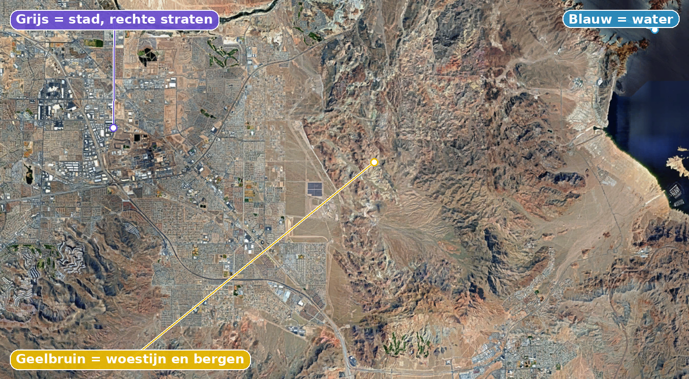
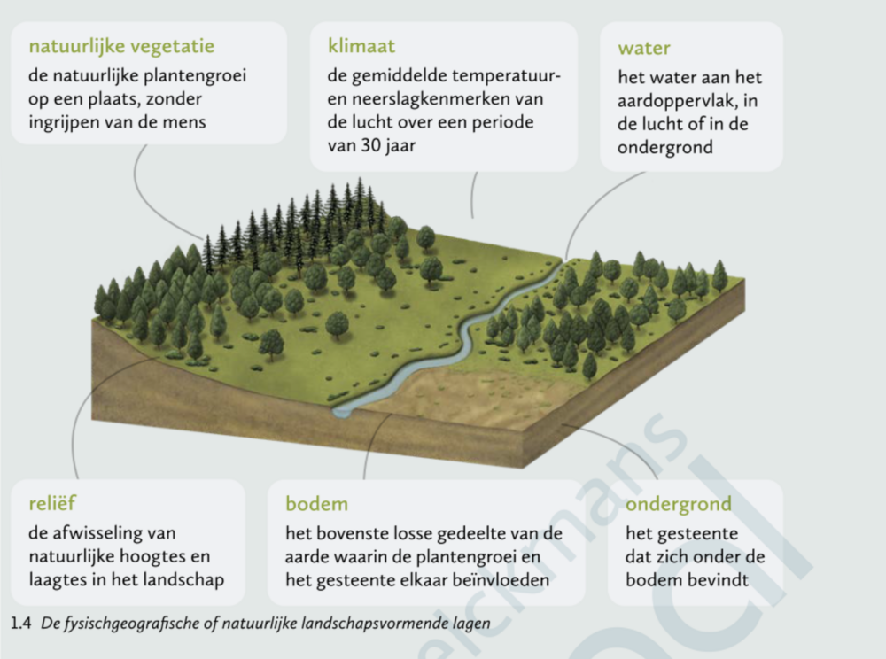

Missielogboek
De belangrijkste ontdekkingen uit dit hoofdstuk, verzameld tijdens de vlucht.
De atmosfeer
De atmosfeer is het mengsel van gassen rond de aarde. Op foto's vanuit het ISS zie je ze als een lichtblauwe, wazige laag. Samen vormen de gassen een beschermende laag: ze houden schadelijke straling van de zon tegen en laten het zichtbare licht door.
Continenten en werelddelen
Vanuit de ruimte zie je vooral blauw: ongeveer 70% van het aardoppervlak is water (oceanen en zeeën), 30% is land. Een continent is een grote aaneengesloten landmassa, niet of nauwelijks verbonden met andere landmassa's. Er zijn vijf continenten: Eurazië, Amerika, Afrika, Antarctica en Australië.
Een werelddeel is een grote landmassa afgescheiden door natuurlijke elementen (oceanen, gebergten, rivieren), inclusief de eilanden errond. Zo behoort Madagaskar tot het werelddeel Afrika, maar niet tot het continent Afrika. Er zijn acht werelddelen: Europa, Noord-Amerika, Centraal- of Midden-Amerika, Zuid-Amerika, Afrika, Azië, Antarctica en Oceanië.
De verschillende kleuren aan het aardoppervlak
Uit de kleuren op een satellietbeeld kan je landschapselementen afleiden:
- Blauw → rivieren, zeeën, oceanen
- Groen → plantengroei
- Geelbruin → woestijnen
- Grijs → bebouwing; in steden zie je veel rechte vormen (straten, kanalen)
- Regelmatige vormen (vierkanten, rechthoeken, cirkels) → landbouwpercelen
's Nachts zie je vanuit het ISS een donkere aardbol met de verlichting van de grote steden.

De fysischgeografische landschapsvormende lagen
Een landschap bestaat uit verschillende lagen die elkaar beïnvloeden. Lagen die door de natuur ontstaan zijn, zonder ingrijpen van de mens, noem je fysischgeografische (of natuurlijke) landschapsvormende lagen. Er zijn er zes:
- Natuurlijke vegetatie: de natuurlijke plantengroei op een plaats, zonder ingrijpen van de mens
- Klimaat: de gemiddelde temperatuur- en neerslagkenmerken van de lucht over een periode van 30 jaar
- Water: het water aan het aardoppervlak, in de lucht of in de ondergrond
- Reliëf: de afwisseling van natuurlijke hoogtes en laagtes in het landschap
- Bodem: het bovenste losse gedeelte van de aarde waarin de plantengroei en het gesteente elkaar beïnvloeden
- Ondergrond: het gesteente dat zich onder de bodem bevindt
Lagen die door de mens gemaakt of veranderd zijn (bv. landbouw, bebouwing, wegen) noem je sociaalgeografische (of menselijke) landschapsvormende lagen. Elke laag die je in dit thema tegenkomt, is dus ofwel fysischgeografisch, ofwel sociaalgeografisch.

Absolute en relatieve ligging
Om een plaats correct te situeren, gebruik je twee soorten ligging:
- Absolute ligging: de exacte plaats op aarde, ongeacht andere plaatsen. Bijvoorbeeld: het halfrond (noordelijk/zuidelijk, westelijk/oostelijk) of de coördinaten (breedtegraad en lengtegraad).
- Relatieve ligging: de plaats van iets ten opzichte van iets anders. Bijvoorbeeld: "ten oosten van Afrika" of "tussen twee landen".
Je gebruikt deze begrippen op verschillende schaalniveaus: van een klein gebied (bv. je eigen gemeente) tot een land, een continent of de hele wereld. Hetzelfde punt kan je op elk niveau situeren: Hasselt ligt bijvoorbeeld in Limburg (lokaal niveau), in België (nationaal niveau), in Europa (continentaal niveau) en op het noordelijk halfrond (mondiaal niveau).
De aarde biedt kansen
Zet een nachtbeeld van de aarde naast een dagbeeld en je ziet meteen waar de meeste mensen wonen: felle lichtvlekken in Europa, Noord-Amerika en Azië, en pikdonkere plekken zoals de Sahara, het Amazonewoud en de Himalaya. De bevolkingsdichtheid (het aantal mensen per km²) verschilt enorm — en klimaat en reliëf verklaren grotendeels waarom.
- Te droog? Warme en gematigde gebieden zonder voldoende neerslag bieden weinig kansen voor landbouw → dunbevolkt (bv. de Sahara).
- Te nat en dichtbegroeid? In het Amazone- en Congobekken valt zoveel neerslag dat er een bijna ondoordringbaar regenwoud ontstaat → ook dunbevolkt, ondanks het op zich gunstige warme klimaat.
- Te hoog en koud? De Alpen en de Himalaya zijn op grote hoogte onbewoond.
- Hoog, maar warm? In de Andes, Burundi en Rwanda is het net omgekeerd: de hoogte maakt het er aangenaam koel → dichtbevolkt.
Ook de ondergrond (grondstoffen zoals olie of ertsen) kan mensen aantrekken, maar speelt een kleinere, minder rechtstreekse rol dan klimaat en reliëf (zie verder bij "Grondstoffen en bevolkingsspreiding").
De mens creëert kansen
De mens laat zich niet zomaar tegenhouden door een ongunstig landschap. Dankzij irrigatie is de kurkdroge Nijlvallei dichtbevolkt, en dankzij terrasbouw zijn steile hellingen in China en andere Aziatische landen omgetoverd tot landbouwgrond.
Sinds de 19de eeuw gooide de industriële revolutie het kaartje helemaal om: betere transporttechnologie liet mensen toe zich te vestigen waar dat voordien niet kon. Miljoenen Europeanen trokken zo naar de oostkust van Noord-Amerika, op zoek naar grondstoffen. Handel en transport werden steeds belangrijker, en steden aan de kust groeiden explosief. Daarom liggen de dichtstbevolkte gebieden van vandaag niet meer overal op de vruchtbaarste landbouwgrond.
Grondstoffen en bevolkingsspreiding
Je zou verwachten dat gebieden met veel grondstoffen (olie, gas, ertsen) ook dichtbevolkt zijn: grondstoffen bieden toch werk en inkomen? In de praktijk klopt dat maar half. Siberië en het noorden van Canada zijn bijvoorbeeld erg rijk aan grondstoffen, maar toch dunbevolkt: het koude klimaat en het moeilijk bereikbare reliëf wegen daar zwaarder door. Omgekeerd is België dichtbevolkt terwijl het land nauwelijks grondstoffen heeft.
Besluit: er is geen duidelijke, rechtstreekse relatie tussen de vindplaats van grondstoffen en de bevolkingsspreiding. Klimaat, reliëf en bodem blijven de doorslaggevende factoren.
Terugkoppelingsmechanismen in het systeem aarde
Systeem aarde bestaat uit onderdelen — sferen, landschapslagen, bevolking — die voortdurend op elkaar inwerken. Verandert er iets, dan zet dat vaak een hele keten van gevolgen in gang. Zo'n keten noem je een terugkoppelingsmechanisme, en die kan twee richtingen uit:
- Positieve (versterkende) terugkoppeling: de gevolgen van een verandering versterken die verandering zelf, waardoor het effect steeds groter wordt.
- Negatieve (dempende) terugkoppeling: de gevolgen van een verandering werken die verandering juist tegen, waardoor het effect afgeremd of teruggedraaid wordt.
Ook de ruimtelijke spreiding van de mens verloopt via zulke mechanismen:
- Positief voorbeeld: een stad met een gunstige ligging trekt inwoners aan → meer inwoners betekent meer vraag naar winkels, bedrijven en diensten → dat schept extra jobs en voorzieningen → wat op zijn beurt weer nog meer mensen aantrekt. De groei versterkt zichzelf.
- Negatief voorbeeld: diezelfde stad wordt op een bepaald moment zo dichtbevolkt dat wonen duur wordt, het verkeer vaststaat en de levenskwaliteit daalt → daardoor trekken mensen net weg naar minder dichtbevolkte gebieden. De groei remt zichzelf af.
Zulke terugkoppelingen verklaren dus mee waarom sommige gebieden razendsnel verder bevolkt raken (positief), terwijl andere zich net weer spreiden of afvlakken (negatief).
Let op: "positief" en "negatief" zeggen hier niets over goed of slecht — enkel over de richting van het effect. Een negatieve (dempende) terugkoppeling zorgt net voor stabiliteit en evenwicht in het systeem. Een positieve (versterkende) terugkoppeling kan een systeem juist uit balans brengen, ook al klinkt "positief" alsof het iets goeds is.
Geheugenkaarten
Tik op een kaart om ze om te draaien en het antwoord te zien.
Ruimtequiz
Verdien je sterren: hoe meer juiste antwoorden, hoe verder je raket vliegt.
Kaartmissies
Echte satellietbeelden en kaarten uit je handboek. Je mag je atlas erbij nemen wanneer je twijfelt.
Mumbai (India) ligt in een vlak kustgebied. Tibet ligt hoog en bergachtig in het Himalayagebergte.
Vijf gebieden en hun grondstoffen: Siberië (aardgas, aardolie, steenkool, ertsen), Zuid-Nigeria (aardolie, aardgas), de centrale westkust van Australië (ijzererts, titaan), België (geen grondstoffen), het noorden van Canada (aardolie, ijzererts).
Samengevat
Als je vanuit de ruimte naar de aarde kijkt, zie je de atmosfeer als een schil rond de aarde. De bevolking woont ongelijk verspreid over de aarde. Alle zes fysischgeografische landschapsvormende lagen (natuurlijke vegetatie, klimaat, water, reliëf, bodem en ondergrond) beïnvloeden samen die spreiding, al is het verband met grondstoffen minder rechtstreeks dan met klimaat en reliëf. De mens creëert daarnaast ook zelf bijkomende kansen, en positieve en negatieve terugkoppelingsmechanismen kunnen bevolkingsconcentraties nog versterken of net afremmen.
Oefen zoals op de toets
Bij een echte overhoring krijg je niet enkel meerkeuzevragen. Oefen hier ook met korte antwoorden, open vragen, juist/fout met verklaring, en rangschikken, net zoals op de toets.
Uitdaging: nieuwe voorbeelden
Pas wat je geleerd hebt toe op een nieuwe uitdaging.